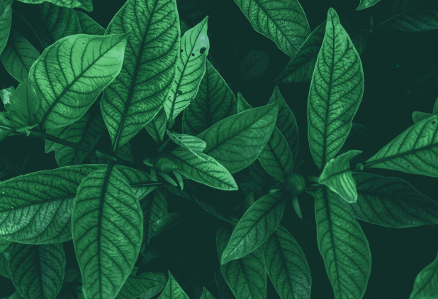

Erom Global Story that provides new
answers on health through nature.
answers on health through nature.
Erom Story.
Health solution corporation through the harmony of nature
and science Beneficial for humankind, beneficial for the world

Finding Erom’s power that brings
forth science from natureRESEARCHER
forth science from nature
RESEARCHER
INTRODUCTION
Healthy power of nature! We are Erom
Global’s Life Science Research Institute.